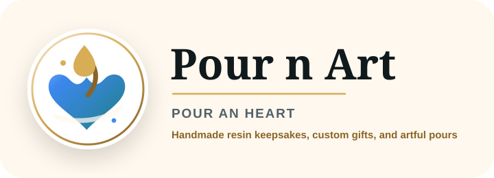
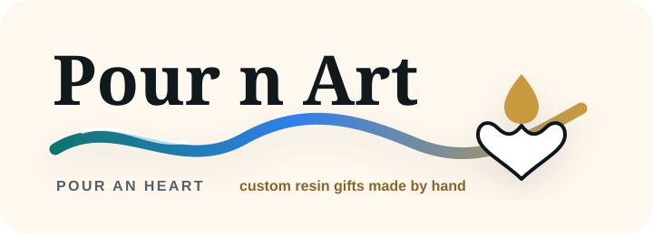

Pour n Art Logo Concepts

01 Heart Pour - clear pour + heart story
02 Boutique Seal - premium and gift-focused

03 Wordmark Wave - elegant horizontal website logo
04 Social Mark - compact icon/avatar direction